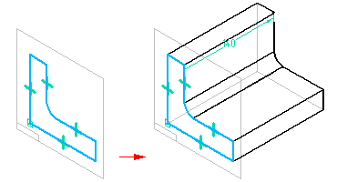

Extrude command (ordered)
Extrude command (ordered)
Use the Extrude command in the ordered environment to construct a protrusion or cutout by extending a sketch region through space to add or remove material from the model.

Note:
When constructing a protrusion using more than one profile, all the profiles must be closed.
The Extrude command bar (ordered) guides you through the main steps and step options, which change with the step and your selections.
When constructing protrusion features, you can also apply a draft angle or crowning to the feature faces that are defined by profile elements. For more information, see Applying draft angle and crowning to features.

How do I
Construct a protrusion or cutout (ordered)Define the extent of an extruded feature
Construct a base feature
Construct a cutout (ordered)
Construct a hole
Construct a hole (ordered)
Construct a hole on a cylinder
Construct an extrusion: base feature
Construct an extrusion or cutout: subsequent features
Construct a protrusion or cutout: model face
Construct a Normal Protrusion
Construct a Normal Cutout (Part Environment)
Finish the Feature
Examples: Constructing Protrusions With the Finite Option
Examples: Constructing Protrusions With the Through All Option
Examples: Constructing Protrusions With the Through Next Option
Examples: Constructing Cutouts With the Through All Option
Examples: Constructing Cutouts With the Through Next Option
Examples: Constructing Cutouts With the Finite Option
Learn more
Part modeling workflow overviewPart modeling: Tips for getting started
Look up more details
Extrude command (synchronous)Extrude command bar (synchronous)
Extrude command bar (ordered)
Cut command
Cut command bar
Demo: Create protrusion or cutout using keypoint
Normal Protrusion command
Normal Protrusion command bar
Normal Cutout command (Part environment)
Normal Cutout command bar (Part environment)